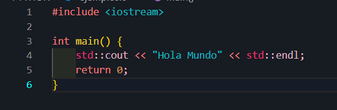

¿Qué es C++?
C++ es un lenguaje de programación de propósito general creado por Bjarne Stroustrup en 1979. C++ es un lenguaje compilado que se utiliza principalmente para desarrollar software eficiente y de alto rendimiento, incluyendo aplicaciones de sistemas operativos, videojuegos y aplicaciones con requisitos de velocidad y control sobre el hardware.
Es conocido por su flexibilidad, permitiendo tanto programación procedimental como orientada a objetos.
Historia de C++
C++ comenzó como una extensión del lenguaje C, con el objetivo de agregar características de la programación orientada a objetos (OOP), como clases y objetos, pero sin perder la eficiencia de C. Desde su creación, ha evolucionado significativamente, adaptándose a las nuevas tendencias de la programación.
Las principales versiones de C++ incluyen:
- C++98: El primer estándar de C++.
- C++03: Mejoras menores sobre C++98.
- C++11: Introdujo características como los punteros inteligentes, la sintaxis de inicialización uniforme y las expresiones lambda.
- C++14: Refinamientos de C++11.
- C++17: Incorporó más optimizaciones y mejoras, como los archivos de sistema de archivos.
- C++20: Introdujo conceptos como los módulos, corutinas y nuevas bibliotecas estándar.
¿Para qué sirve C++?
C++ se utiliza en una variedad de campos debido a su eficiencia y capacidad de control sobre el hardware:
- Desarrollo de sistemas operativos: C++ permite una gestión eficiente de los recursos del sistema.
- Creación de videojuegos y motores gráficos: Se usa ampliamente en motores como Unreal Engine y Unity debido a su rendimiento.
- Software embebido: C++ es ideal para programar dispositivos con recursos limitados.
- Aplicaciones científicas y de ingeniería: Muchos programas de simulación y cálculo intensivo están escritos en C++.
Icono del lenguaje:

¿Cómo funciona C++?
C++ es un lenguaje compilado, lo que significa que el código fuente debe ser traducido a código máquina a través de un compilador. Este proceso incluye:
- Escribir el código fuente en un archivo con extensión
.cpp.
- Utilizar un compilador como GCC o Clang para traducir el código a un archivo ejecutable.
- Ejecutar el programa en una máquina que puede interpretar el código compilado.
Ejemplo de un programa simple en C++:
#include <iostream>
int main() {
std::cout << "¡Hola, mundo!" << std::endl;
return 0;
}
Este código incluye la librería <iostream> para trabajar con la entrada y salida estándar. Utiliza std::cout para imprimir el mensaje "¡Hola, mundo!" y luego termina el programa con return 0;.
La base de C++:
En la base de C++ están los conceptos de programación orientada a objetos, como clases, objetos y herencia. Además, su estrecha relación con el sistema operativo y el hardware permite el acceso directo a la memoria y optimización de recursos, lo que lo hace ideal para aplicaciones de alto rendimiento.

¿Qué se necesita para programar en C++?
Para programar en C++, se requiere:
- Un compilador: Programas como GCC o Visual C++ que convierten el código fuente en un archivo ejecutable.
- Un entorno de desarrollo (IDE): Herramientas como Visual Studio, Code::Blocks o CLion que facilitan la escritura, organización y depuración del código.
- Conocimiento de la sintaxis: Comprender conceptos clave de C++ como variables, tipos de datos, estructuras de control (if, loops), funciones, clases y punteros.
Lenguajes que complementan C++
C++ se combina con otros lenguajes y tecnologías para potenciar sus capacidades:
- Python: Utilizado en combinación con C++ para scripts de alto nivel y automatización en aplicaciones.
- JavaScript: En aplicaciones web, C++ se usa en el backend para manejar operaciones de alto rendimiento.
- OpenGL y DirectX: Usados para crear gráficos 3D en videojuegos.
- CUDA: C++ es ampliamente utilizado con CUDA para aprovechar la capacidad de procesamiento paralelo de las GPUs.
Ventajas de C++
- Alto rendimiento: C++ permite un control preciso de la memoria y el hardware, siendo ideal para aplicaciones exigentes.
- Programación orientada a objetos: Soporta clases, herencia y polimorfismo, facilitando el diseño modular y reutilizable.
- Portabilidad: Los programas en C++ pueden ser compilados en múltiples plataformas con cambios mínimos.
- Amplia biblioteca estándar (STL): Proporciona estructuras de datos, algoritmos y funciones listas para usar.
- Uso en sistemas críticos: C++ es popular en sistemas embebidos, motores de videojuegos y software de alto rendimiento.
Desventajas de C++
- Complejidad: Su sintaxis y características avanzadas pueden ser difíciles de manejar para principiantes.
- Gestión manual de memoria: La ausencia de recolección automática de basura puede causar fugas de memoria y errores.
- Tiempo de compilación largo: Los proyectos grandes en C++ pueden tardar bastante en compilarse debido a su complejidad.
- Errores difíciles de depurar: Los punteros y la administración de memoria pueden generar errores complicados de rastrear.
Conclusión
C++ es un lenguaje de programación robusto y eficiente, ideal para desarrollar aplicaciones que requieren un control detallado sobre el hardware, así como alto rendimiento. Aunque tiene una curva de aprendizaje más empinada en comparación con otros lenguajes, dominar C++ es esencial para quienes desean trabajar en áreas de sistemas operativos, desarrollo de videojuegos, o aplicaciones en tiempo real.